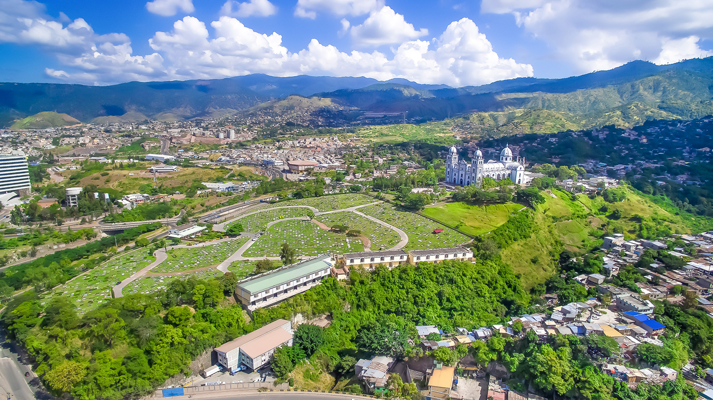

Proyecto Migracions'19
Barres i ones
Proyecto Migracions'19
Barres i ones
Biografia
Entrevista
Plato
Receta
Alumnos

Marina-Catrachitas
Nació en Honduras
Marina es hija de padres divorciados, vino a Cataluña para trabajar a los 33 años embarazada de su hija. Trabaja de auxiliar de geriatría en la residencia Ballesol y le gusta mucho su trabajo ya que le gusta ayudar a las personas y aprende mucho de los ancianos, de pequeña quería ser asistente de aviones pero le daban miedo las alturas.